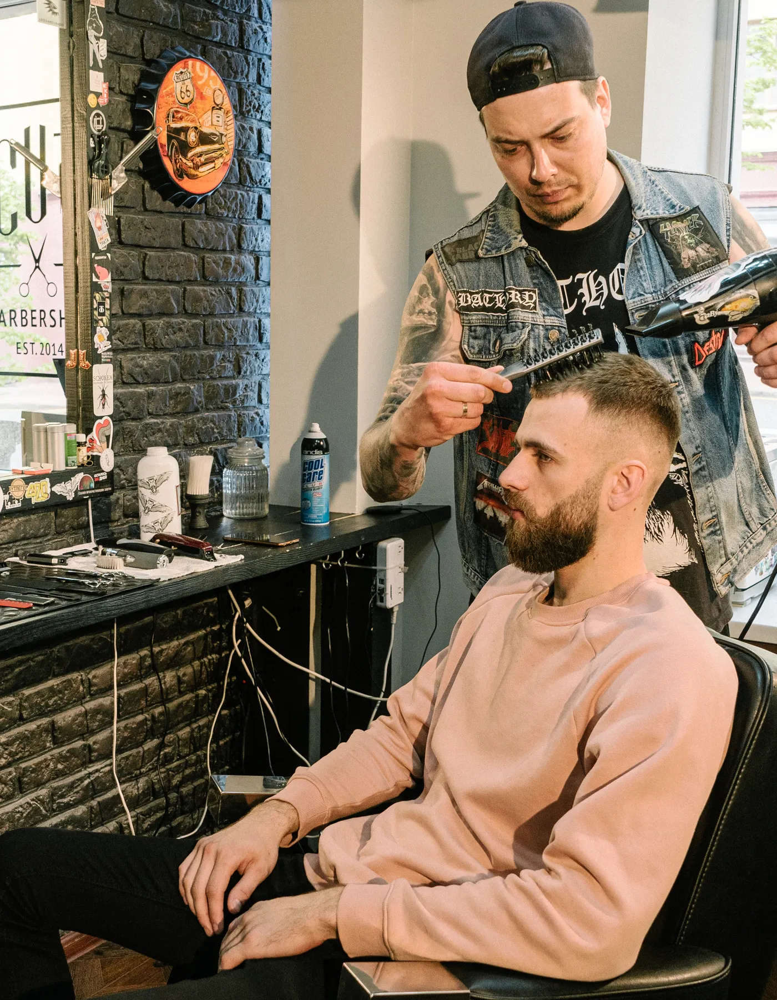
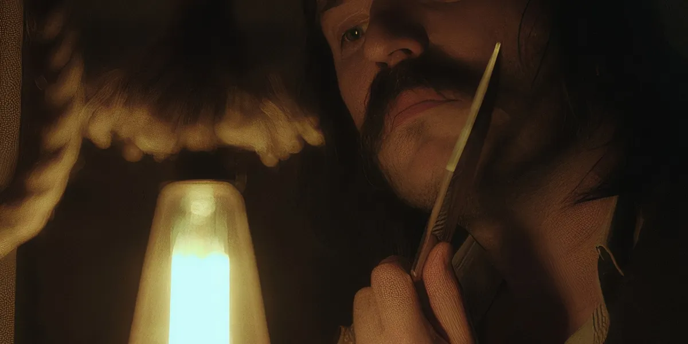
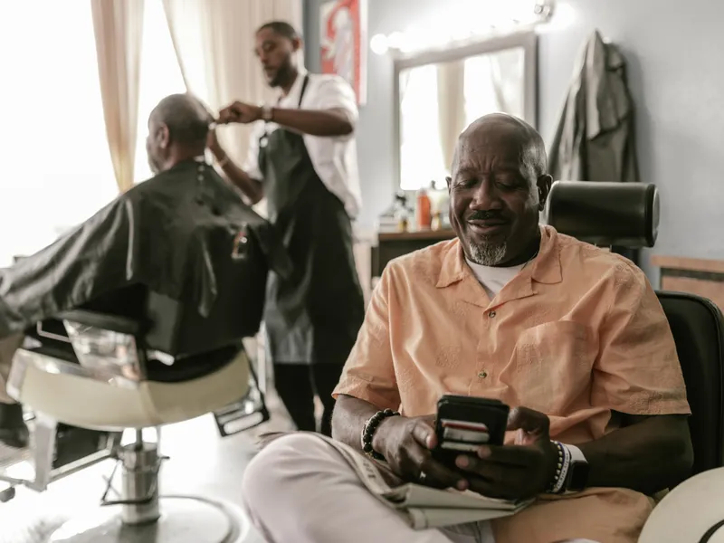
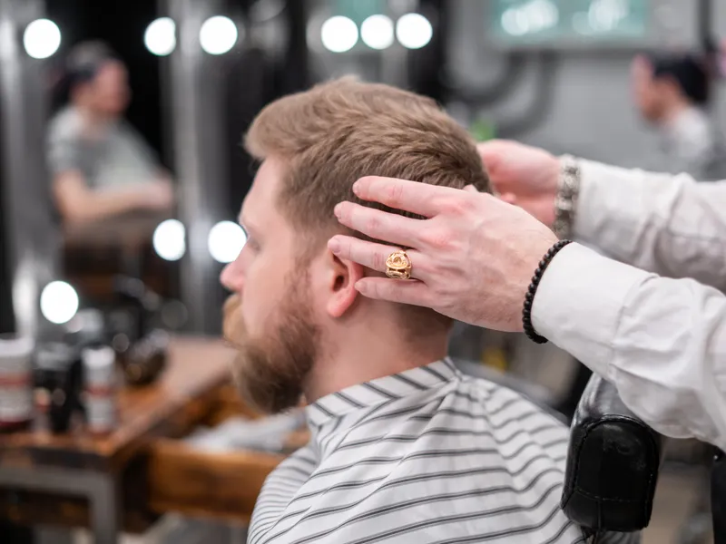
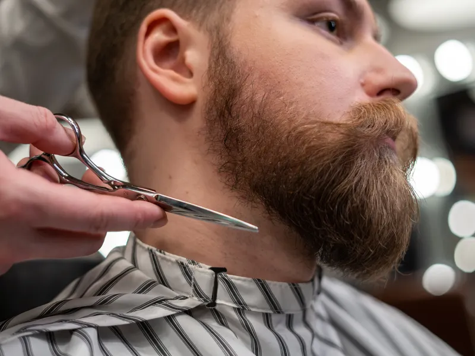
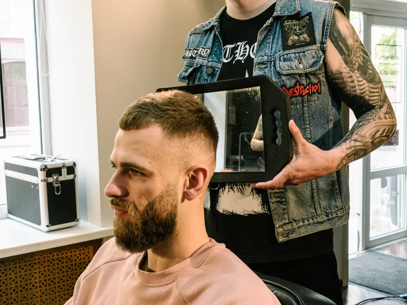
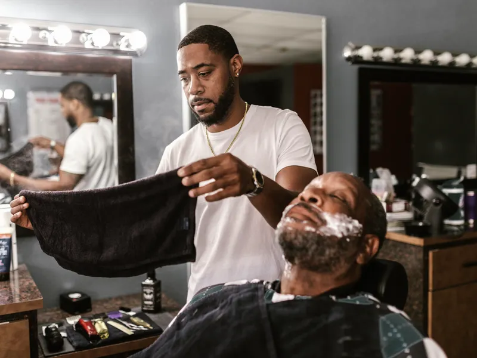
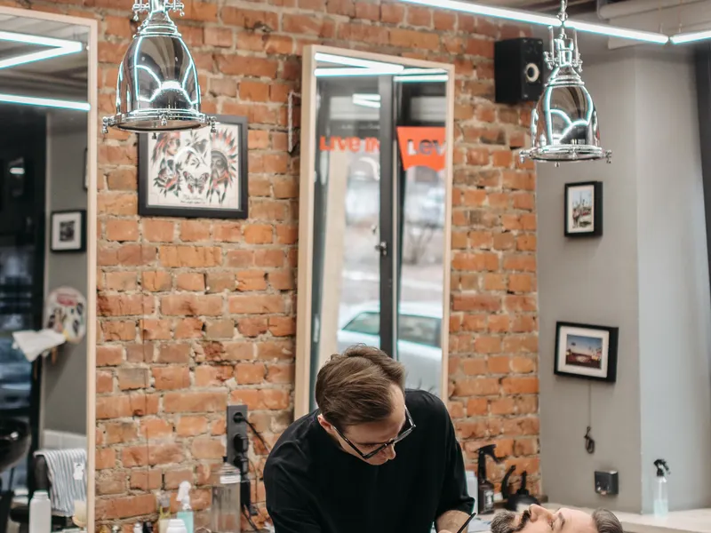

Corte de cabelo
Consulta de estilo, corte com tesoura ou máquina e finalização cuidadosa para um visual alinhado à sua personalidade.
R$ 85,00

Barbearia premium
Estilo que marca. Precisão que define.
Uma experiência de cuidado masculino que une a tradição da barbearia clássica ao acabamento preciso. Luxo discreto, atenção aos detalhes e personalidade em cada corte.
Nossos serviços
Consulta de estilo, corte com tesoura ou máquina e finalização cuidadosa para um visual alinhado à sua personalidade.
R$ 85,00
Modelagem da barba, definição dos contornos e acabamento com toalha quente para um cuidado inspirado nos rituais clássicos.
R$ 60,00
Corte de cabelo e modelagem da barba em uma experiência completa, com proporções harmoniosas e atenção a cada detalhe.
R$ 130,00

Sobre a barbearia
A Barber Noir é uma barbearia fictícia criada para celebrar a elegância dos cortes clássicos e a expressão individual. Sua proposta combina atendimento atencioso, técnica apurada e um momento de pausa na rotina.
Fotografias ilustrativas do universo da barbearia.






Agendamento ilustrativo para demonstração de portfólio.
Onde encontrar
Localização ilustrativa — projeto demonstrativo
Não informados neste projeto demonstrativo.
Como chegar (abre em nova aba)